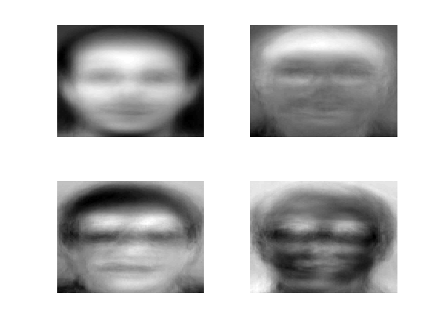
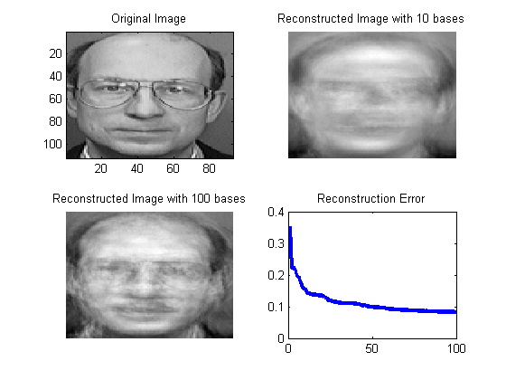
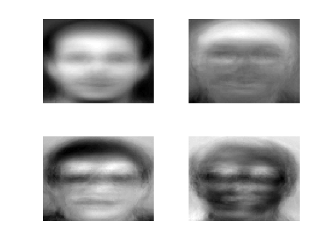
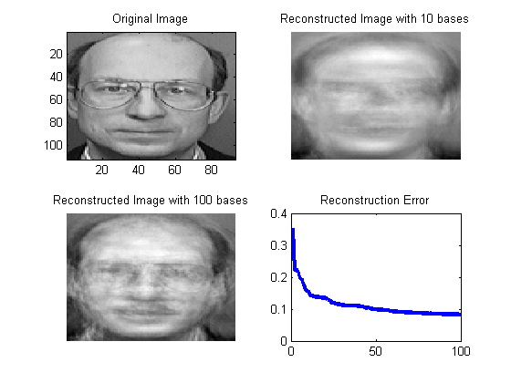

PCA Face Demo
Based on code by Mark Girolami
% This file is from pmtk3.googlecode.com requireImageToolbox loadData('facesOlivetti'); h = 112; w = 92; % plot the first 25 faces as a single image figure; N = 25; XtrainImg = zeros(h,w,1,N); for i = 1:N XtrainImg(:,:,1,i) = reshape(Xtrain(i,:), [h w]); end montage(XtrainImg); title(sprintf('first %d training images', N)) %for i=1:25 % subplot(5,5,i) % f = reshape(X(i,:), [h w]); % imagesc(f); % axis off %end %colormap gray Selected_Face = 125;%312;%255; [N,D]=size(X); mean_face = mean(X); %X = X - repmat(mean_face,N,1); fprintf('Performing PCA.... stay tuned\n'); K = 100; [B, mu, Xp, Xrecon] = pcaPmtk(X, K); %tic; [B] = pcaPmtk(X,K); toc Xproj = X*B; % visualize basis functions (eigenfaces) figure; subplot(2,2,1) f = reshape(mean_face, [h w]); imagesc(f); axis off for i=1:3 subplot(2,2,i+1) f = reshape(B(:,i), [h w]); imagesc(f); axis off end colormap gray % visualize reconstruction figure; subplot(2,2,1) %imagesc(reshape(X(Selected_Face,:)+mean_face,h,w)); imagesc(reshape(X(Selected_Face,:),h,w)); title('Original Image'); recon_err=[]; for i=1:K X_Reconst=Xproj(Selected_Face,1:i)*B(:,1:i)' + mean_face; if i==10 subplot(2,2,2) imagesc(reshape(X_Reconst',h,w)); axis off title('Reconstructed Image with 10 bases');drawnow; elseif i==100 subplot(2,2,3) imagesc(reshape(X_Reconst',h,w)); axis off title('Reconstructed Image with 100 bases');drawnow; end recon_err = [recon_err;sqrt(mean((X_Reconst - (X(Selected_Face,:) + mean_face) ).^2,2))]; colormap gray subplot(2,2,4) plot(1:i,recon_err,'LineWidth',3); title('Reconstruction Error'); fprintf('%d:Reconstruction Error = %f\n',i,recon_err(i)) end
Performing PCA.... stay tuned 1:Reconstruction Error = 0.353734 2:Reconstruction Error = 0.221739 3:Reconstruction Error = 0.220793 4:Reconstruction Error = 0.220514 5:Reconstruction Error = 0.199437 6:Reconstruction Error = 0.193948 7:Reconstruction Error = 0.177556 8:Reconstruction Error = 0.169741 9:Reconstruction Error = 0.156162 10:Reconstruction Error = 0.155950 11:Reconstruction Error = 0.142156 12:Reconstruction Error = 0.142148 13:Reconstruction Error = 0.139159 14:Reconstruction Error = 0.138069 15:Reconstruction Error = 0.137516 16:Reconstruction Error = 0.137193 17:Reconstruction Error = 0.136645 18:Reconstruction Error = 0.135029 19:Reconstruction Error = 0.134481 20:Reconstruction Error = 0.134382 21:Reconstruction Error = 0.132160 22:Reconstruction Error = 0.128967 23:Reconstruction Error = 0.125925 24:Reconstruction Error = 0.119044 25:Reconstruction Error = 0.118750 26:Reconstruction Error = 0.118042 27:Reconstruction Error = 0.115544 28:Reconstruction Error = 0.115329 29:Reconstruction Error = 0.114762 30:Reconstruction Error = 0.111839 31:Reconstruction Error = 0.111838 32:Reconstruction Error = 0.111401 33:Reconstruction Error = 0.111257 34:Reconstruction Error = 0.111253 35:Reconstruction Error = 0.110900 36:Reconstruction Error = 0.110074 37:Reconstruction Error = 0.110073 38:Reconstruction Error = 0.110027 39:Reconstruction Error = 0.109607 40:Reconstruction Error = 0.109390 41:Reconstruction Error = 0.107705 42:Reconstruction Error = 0.107705 43:Reconstruction Error = 0.104954 44:Reconstruction Error = 0.104105 45:Reconstruction Error = 0.104103 46:Reconstruction Error = 0.102104 47:Reconstruction Error = 0.101348 48:Reconstruction Error = 0.101247 49:Reconstruction Error = 0.100197 50:Reconstruction Error = 0.098757 51:Reconstruction Error = 0.098393 52:Reconstruction Error = 0.097961 53:Reconstruction Error = 0.097232 54:Reconstruction Error = 0.097216 55:Reconstruction Error = 0.096375 56:Reconstruction Error = 0.096343 57:Reconstruction Error = 0.096241 58:Reconstruction Error = 0.092878 59:Reconstruction Error = 0.092870 60:Reconstruction Error = 0.092499 61:Reconstruction Error = 0.092079 62:Reconstruction Error = 0.092079 63:Reconstruction Error = 0.091369 64:Reconstruction Error = 0.091145 65:Reconstruction Error = 0.091084 66:Reconstruction Error = 0.090400 67:Reconstruction Error = 0.089754 68:Reconstruction Error = 0.089513 69:Reconstruction Error = 0.089095 70:Reconstruction Error = 0.089068 71:Reconstruction Error = 0.088766 72:Reconstruction Error = 0.088114 73:Reconstruction Error = 0.088104 74:Reconstruction Error = 0.087915 75:Reconstruction Error = 0.087810 76:Reconstruction Error = 0.087283 77:Reconstruction Error = 0.087019 78:Reconstruction Error = 0.086960 79:Reconstruction Error = 0.086845 80:Reconstruction Error = 0.086727 81:Reconstruction Error = 0.086716 82:Reconstruction Error = 0.085933 83:Reconstruction Error = 0.085182 84:Reconstruction Error = 0.085168 85:Reconstruction Error = 0.085156 86:Reconstruction Error = 0.085037 87:Reconstruction Error = 0.085029 88:Reconstruction Error = 0.084440 89:Reconstruction Error = 0.084186 90:Reconstruction Error = 0.083964 91:Reconstruction Error = 0.083955 92:Reconstruction Error = 0.083925 93:Reconstruction Error = 0.083766 94:Reconstruction Error = 0.083515 95:Reconstruction Error = 0.083400 96:Reconstruction Error = 0.083400 97:Reconstruction Error = 0.082966 98:Reconstruction Error = 0.082958 99:Reconstruction Error = 0.082278 100:Reconstruction Error = 0.082277
  
 